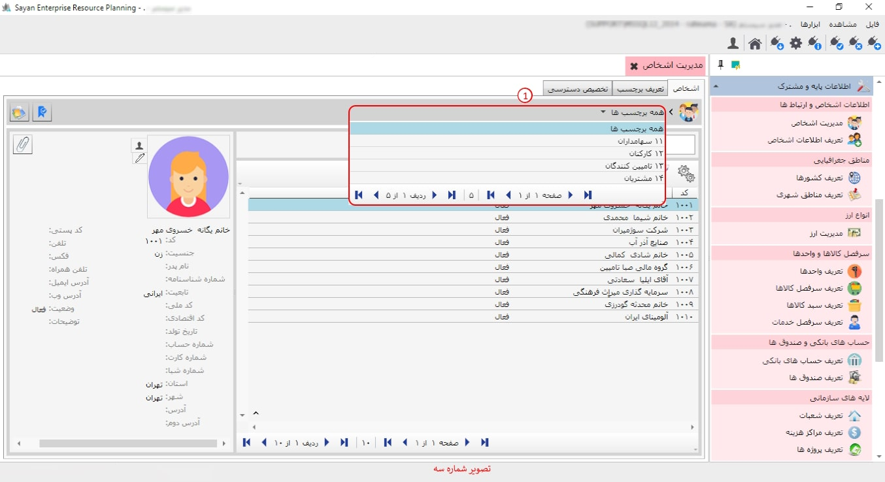

در این بخش می توانید اطلاعات مربوط به اشخاصی که با آن ها در ارتباط هستید اعم از سهامداران کارکنان تامین کنندگان را تعریف نمایید.

برای ادامه ی مطلب به تصویر شماره دو مراجعه نمایید.

-اشخاص (کادر شماره یک):در این قسمت با توجه به انتخاب برچسب هاتون اشخاص مرتبط با آن برچسب برایتان نمایان می شود.
نکته:اگر همه برچسب ها را انتخاب نمایید در این حالت، تمامی اشخاصی که تعریف کرده اید برایتان نمایان می شود .
-همه برچسب ها (کادر شماره دو):پس از انتخاب سر برگ اشخاص ابتدا باید نوع برچسبی که می خواهید مشاهده کنید و یا در آن شخصی را ایجاد ویرایش حذف و فیلتر نمایید
برای ادامه مطلب به تصویر شماره سه مراجعه نمایید.
-همه برچسب ها (کادر شماره یک):در این آیتم با باز کردن کشو همه برچسب هایی که تعریف کرده اید را می توانید مشاهده کنید.
برای ادامه ی مطلب به تصویر شماره چهار مراجعه نمایید.

-کادر شماره یک:
-نام سازمان (کادر شماره دوم):
برای ادامه ی مطلب به تصویر شماره پنج مراجعه نمایید.

-تعریف برچسب (کادر شماره یک):در این بخش می توانید برچسب های مورد نیازتان را تعریف کنید .
-کادر شماره دوم:
-کادر شماره سوم:
برای ادامه مطلب به تصویر شماره شش مراجعه نمایید.

-تخصیص دسترسی (کادر شماره یک):
-کادر شماره دوم:
-کادر شماره سوم:در این قسمت میتوانید موارد انتخاب نشده را به موارد انتخاب شده انتقال دهید.
برای ادامه مطلب به تصویر شماره هفت مراجعه نمایید.

-موارد انتخاب شده (کادر شماه یک):در این بخش میتوانید موارد انتخاب شده رو به انتخاب نشده انتقال دهید.
-موارد انتخاب نشده (کادر شماره دوم):این فیلد این امکان رو به شما می دهد که موارد انتخاب نشده را به موارد انتخاب شده منتقل کنید .

کادر شماره سوم:برای اضافه کردن موارد انتخاب نشده از این آیکون میتوانید استفاده کنید .

کادر شماره چهارم:در این آیکون میتوانید برای حذف موارد انتحاب شده استفاده نمایید.